普通化學
CH 7~10 20 21 章節重點整理 (停止更新)
7-1 Electromagnetic Radiation 電子輻射
- Wavelength 波長(λ)
- Frequency 頻率(ν)
- Speed of light 光速(c) ≈ 2.9979×108 m/s
長
↑ radio wave 無線電波 ≈ 102(m)
microwave 微波 ≈ 10-2(m)
infrared 紅外線 ≈ 10-4(m)
visible light 可見光 380~780(nm)
ultraviolet 紫外線 10~380(nm)
X-ray X光 ≈ 10-10(m)
↓gamma ray γ射線 ≈ 10-12(m)
短
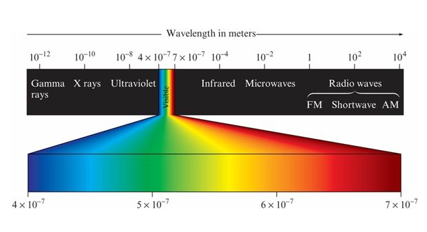
7-2 The Nature of Mass
Planck's constant普朗克常數(h) = 6.626×10-34(J ⋅ s)
- electron 電子
- photons 光子
- Diffraction 繞射
The energy of a photon 光子能量
Photoelectric effect 光電效應
m: mass of electron
v: velocity of electron
hν: energy of incident photon
hν0: energy required to remove electron from metal's surface
Mass-energy conservation 質能互換公式
Matter wave 物質波
7-3 The Atomic Spectrum of Hydrogen 氫原子光譜
- Continuous spectrum(連續光譜)
白光穿過棱鏡後形成的光譜
- Line spectrum(線光譜)
僅顯示某些特定波長的光譜
E: change in energy
ν: frequency of light limit
λ: wavelength of light limit
7-4 The Bohr Model 波耳模型
Bohr's model of the hydrogen atom 波耳氫原子模型
Hydrogen energy level 氫原子能階
Electron transition 電子躍遷
7-5 The Quantum Mechanical Model of the Atom
ψ: wave funtion
Ĥ: operator
E: total energy of the atom
Heisenberg uncer-tainty principle 海森堡測不準原理
Δx: uncertainty in a particle’s position
Δ(mυ): uncertainty in particle momentum
7-6 Quantum Number 量子數
- orbital 軌域
- momentum 動量
Principal quantum number 主量子數(n)
relate to the size and energy of the orbital
n = 1, 2, 3, ...
Angular momentum quantum number 角動量量子數(𝓵)
relate to the shape ofatomic orbit-als
𝓵 = 0, 1, 2, ... (n-1)
| 𝓵 | 0 | 1 | 2 | 3 | 4 |
|---|---|---|---|---|---|
| letter used | s | p | d | f | g |
Magnetic quantum number 磁量子數(m𝓵)
related to the orientation of an orbital in space relative to the other orbitals in the atom
m𝓵
= -𝓵, ..., 0, ..., 𝓵
| n | 𝓵 | sublevel designer | m𝓵 | numbers of orbitals |
|---|---|---|---|---|
| 1 | 0 | 1s | 0 | 1 |
| 2 | 0 | 2s | 0 | 1 |
| 1 | 2p | -1,0,1 | 3 | |
| 3 | 0 | 3s | 0 | 1 |
| 1 | 3p | -1,0,1 | 3 | |
| 2 | 3d | -2 ~ 2 | 5 | |
| 4 | 0 | 4s | 0 | 1 |
| 1 | 4p | -1,0,1 | 3 | |
| 2 | 4d | -2 ~ 2 | 5 | |
| 3 | 4f | -3 ~ 3 | 7 | |
7-7 Orbital Shapes and Energy
7-8 Electron Spin and the Pauli Principle
Electron spin quantum number 自旋量子數(ms)
related to the direction of electron spin
mls = +1/2 or -1/2
Paul exclusion priciple
同個原子裡不會有兩個電子擁有一樣的四個量子數
7-9 Polyelectonic Atoms 多電子原子
Polyelectronic Atoms
energy level order in polyelectronic atoms
E(ns)>E(np)>E(nd)>E(nf)
Penetration effect 穿透效應
軌域較靠近原子核處, 能量較低, 電子優先填入
7-11 The Aufbau Principle and the Periodic Table
- core electron 核電子
- valence electrons 價電子
Aufbau principle 構築原理
新增電子會先填入低能量軌域, 軌域填滿後才會填入更高能量軌域
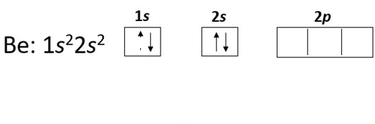
Hund's rule 洪德定律
當電子排序在能量相同的不同軌域, 會優先佔據不同軌域且自旋方向相同
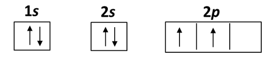
7-12 Periodic Trends in Atomics Properties
Ionization energy 游離能
從原子移出一個電子所需的能量
the first ionization energy (I1)
→ 2A > 3A, 5A > 6A
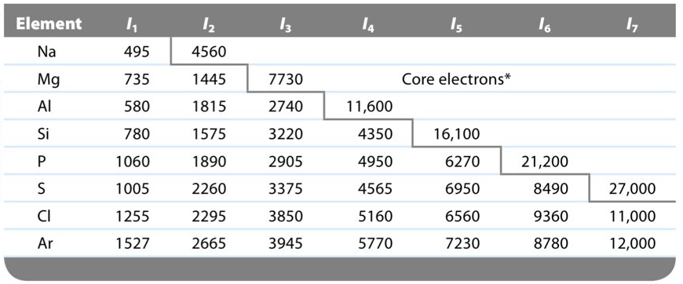
electron affinity 電子親和力
原子吸引電子結合成陰離子時的能量變化
Aomic radius 原子半徑
同一族, 原子序越大, 原子半徑越大
同個週期, 原子序越大, 原子半徑越小
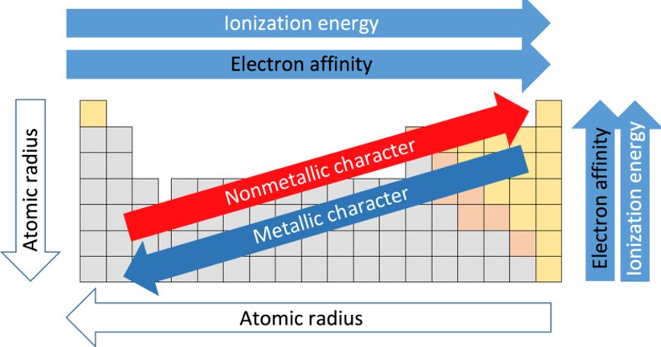
7-13 The Properties of a Group: The Alkali Metals 鹼金屬
elements in the periodic table are divided into metals and nonmetals
metals have low ionization energies
Nonmetals have large ionization energies and negative electron affinities
Metalloids(semimetals): Elements that exhibit both metallic and nonmetallic properties
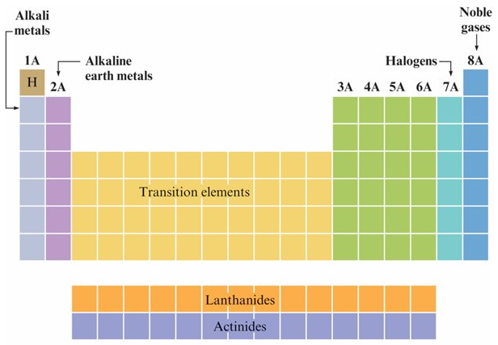
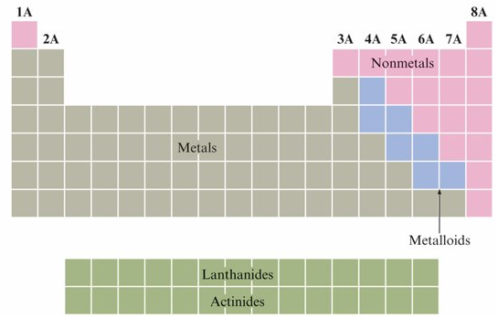
The alkali metals 鹼金屬
- Li, Na, K, Rb, Cs, and Fr
- the most chemically reactive of the metal
- react with nonmetals to form ionic solids
- because of the small atomic radius of hydrogen, it exhibits nonmetallic properties.
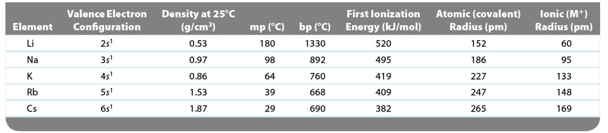
- alkaline earth metal 鹼土金屬
- halogen 鹵素
- noble gases 惰性氣體
8-1 Types of Chemical Bonds
- bond energy 鍵能
- bond lengh 鍵長
- ionic bonding 離子鍵
- ionic compound 離子化合物
- covalent Bonding 共價鍵
- polar covalent Bonding 極性共價鍵
Coulomb's law
用於計算一對離子間的能量
- r: 離子中心距離
- Q1, Q2: 離子電荷數
interaction between two hydrogen atoms: important features(略)
- net potential energy
- kinetic energy
- zero point of energy
- very short distances
- bond length
Ex. What type of bond is formed when electrons are unequally shared by nuclei?
a. Ionic
b. covalent
c. polar ionic
d. polar covalent
e. none of the above
8-2 Electronegativity 電負度
分子中原子吸引共用電子的能力
一個假想分子 HX
H 和 X 原子的相對電負性透過比較測得的 H—X 鍵能與預期的 H—X 鍵能後得出
實際鍵能與預期鍵能之差(Δ)由下列公式得出
若H和X的電負性相等, 即Δ = 0
其電子均勻共享, 為非極性鍵
若X的電負性大於H
電子向 X 移動, 為極性鍵
形成部分電荷: H δ+, X δ-
電負度差異越大, 離子性越高
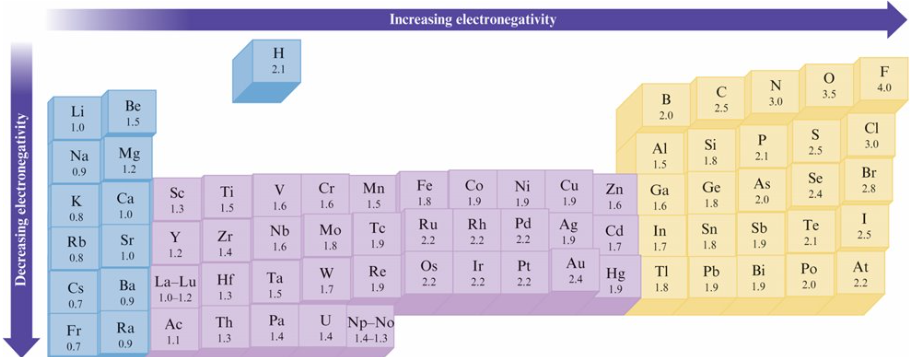
Ex. Which of the following elements forms the most ionic bond with chlorine?
a. K
b. Al
c. P
d. Kr
e. Br
Ex. As a general pattern, electronegativity is inversely related to:
a. ionization energy
b. atomic size
c. the polarity of the atom
d. the number of neutrons in the nucleu
8-3 Bond Polarity and Dipole Moments 極性與偶極矩
bond dipole (鍵偶極) : 表示單一化學鍵的極性方向
molecular dipole 分子偶極 : 分子中所有鍵偶極的向量總和
dipole moments
Ex. Which of the following is the most polar bond without being considered ionic?
a. C - O
b. Mg - O
c. N - O
d. O - O
e. O - F
Ex. What is the correct order of the following bonds in terms of decreasing polarity?
a. N—Cl, P—Cl, As—Cl
b. P—Cl, N—Cl, As—Cl
c. As—Cl, N—Cl, P—Cl
d. P—Cl, As—Cl, N—Cl
e. As—Cl, P—Cl, N—Cl
Ex. which case is the bond polarity incorrect?
a. δ+H - Fδ-
b. δ+K - Oδ-
c. δ+Mg - Hδ-
d.δ+Cl - Iδ-
e. δ+Si - Sδ-
8-4 Ions: Electron Configurations and Sizes 離子 電子分布與尺寸
Generalizations that apply to electron configurations in stable Compounds
共價鍵以電子共享的方式使兩邊原子形成八隅體
離子鍵使金屬原子失去電子, 非金屬原子獲得電子,
使兩個原子滿足八隅體
- 1A族失去1電子
- 2A族失去2電子
- 3A族失去3電子
- 7A族得到1電子
- 6A得到2電子
Ionic size
同個元素的半徑大小: 陽離子 < 原子 < 陰離子
相同電子數的離子半徑大小: 價數低 > 價數高
Ex. Which of the following has the largest radius?
a. S2-
b.Cl-
c. Ar
d. K+
e. Ca2+
8-5 Effects in Binary Ionic Compounds
- cation 陽離子
- anion 陰離子
- endothermic 吸熱
- exothermic 放熱
Lattice energy 晶格能
氣態離子之間形成離子固體的能量變化
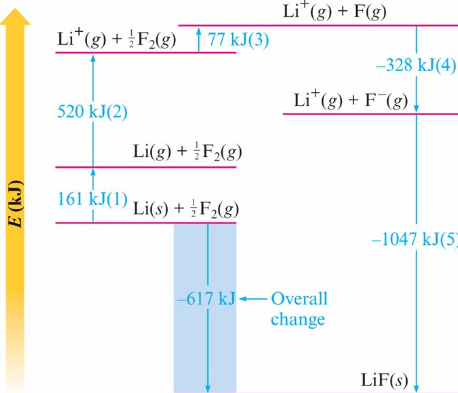
晶格能以庫侖定律式表示
Lattice energy = k(Q1Q2/r)
- k: 比例常數
- Q1Q2: 離子電荷數
- r: 離子間最短距離
晶格能與電荷大小成正比, 與離子間距離成反比
Ex.Which of the following ionic compounds has the largest lattice energy (i.e., the lattice energy most
favorable to a stable lattice)?
a. CsI
b. NaCl
c. LiF
d. CsF
e. MgO
8-6 Partial Ionic Character of Covalent Bonds
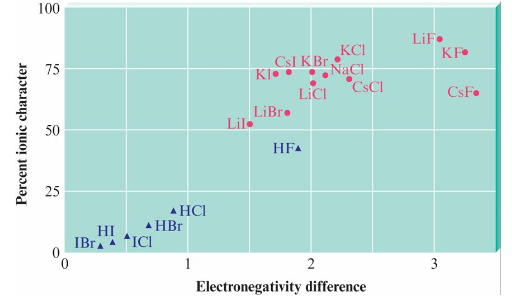
8-7 The Covalent Chemical Bond: A Model
8-8 Covalent Bond Energies and Chemical Reactions 共價鍵能與化學反應
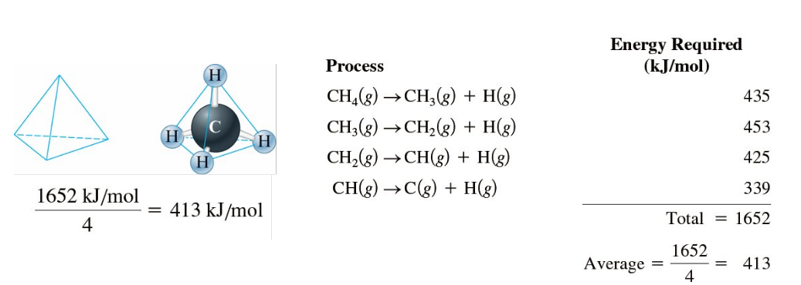
Types of bonds
鍵數增加, 鍵長減少
- single bond 單鍵
- double bond 雙鍵
- triple bond 三鍵
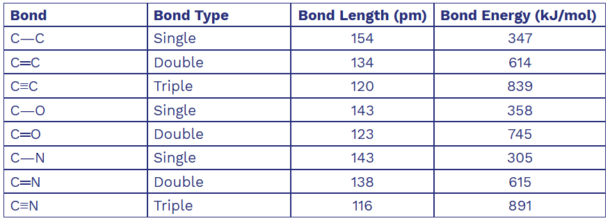
Enthalpy change for a reaction
bond energy 鍵能: 打斷一莫耳氣態分子間的特定化學鍵其所需能量, (恆為正值, 吸熱) 而形成鍵結時會釋放能量(放熱)
ΔH = ∑n × D(bonds broken) - ∑n × D(bonds formed)
- Σ: Sum of terms
- D: bond energy per mole of bonds, always has a positive sign
- n: moles of a particular type of bond
8-9 The Localized Electron Bonding Model 局部電子鍵結模型
- lone pair 孤對電子
- bonding pair 鍵結電子
- octet rule 八隅體
Localized electron(LE) model
利用路易斯結構描述分子中的價電子排列
利用VSEPR預測分子的幾何構造
描述原子用於共享電子或容納孤對電子的原子軌道類型
8-10 Lewis Structures 路易斯結構
畫出價電子, 鍵結電子, 孤對電子的表示法
分子中心原子電負度低 , 外圍電子電負度高
其滿足H的二隅體與C N O F的八隅體規則
Steps
計算所有原子的價電子數總和, 用單鍵連接所有原子, 再用剩餘電子滿足八隅體規則
Which of the following does not contain at least one double bond in the Lewis structure?
a. H2CO
b. C2H4
c. CO2
d. C3H8
8-11 Exceptions to the Octet Rule 八隅體規則的例外
缺電子(incomplete octet): 中心原子少於8顆電子(ex: BF3)
奇數電子(odd-electron): 價電子數之和為奇數(ex: NO)
擴張八隅體(expented octet): 利用d軌域使中心原子多於8顆電子(ex: SF6 , PCl5 , I3-
Which of the following has a Lewis structure most like that of a. CO32- ?
b. CO2
c. SO32-
d. NO3-
e. O3
NO2
Ex. Which molecule or ion violates the octet rule?
a. H2O
b. NO3-
c. PF3
d. I3-
e. None of these
8-12 Resonance 共振
Resonance
當單一路易斯結構式無法描述鍵結時, 以多個共振結構表示
Formal charge 形式電荷
用於評估路易斯結構的合理性
- 形式電荷總和為0(中性分子)或總電荷(離子)
- 盡量使每個原子形式電荷接近
- 負的形式電荷應落在電負度最大的原子上
Formal charge = 價電子數 - 孤對電子數 - 鍵結數
Ex. How many resonance structures does the molecule SO2 have?
a. 0
b. 1
c. 2
d. 3
e. 4
8-13 Molecular Structure: The VSEPR Model
The valence shell electron-pair repulsion 價殼層電子對互斥理論(VSEPR)
| structure | bond angle | hybridization | example | |
|---|---|---|---|---|
| linear 直線 | (AB₂)(AB₂E₃) | 180° | sp | BeCl2 I3- |
| trigonal planar 平面三角形 | (AB₃) | 120° | sp2 | BF3 |
| V-shaped 角形 | (AB₂E)(AB₂E₂) | H2O | ||
| tetrahedral 四面體形 | (AB₄) | 109.5° | sp3 | CH4 |
| trigonal pyramidal 三角錐形 | (AB₃E) | NH3 NF3 | ||
| trigonal bipyramidal 雙三角錐形 | (AB₅) | 90° 120° | PCl5 | |
| see-saw 蹺蹺板形 | (AB₄E) | SF4 | ||
| T-shaped T字形 | (AB₃E₂)(AB₃E₃) | XeOF2 | ||
| octahedral 八面體形 | (AB₆) | 90° | PCl6- | |
| square pyramidal 方錐體 | (AB₅E) | IF5 | ||
| square planar 平面四邊形 | (AB₄E₂) | 90° | XeF4 |
The VSEPR model and multiple bonds
Ex. Which of the following molecules is polar?
- XeF4
- XeF2
- BF3
- NF3
Ex. Which of the following molecules does not have a dipole moment?
- H2S
- H2O
- H2Xe
- All of these have a dipole moment
- None of these has a dipole moment
Ex. Which of the following molecules has a dipole moment?
- CF4
- SF4
- XeF4
- All of these have a dipole moment
- None of these has a dipole moment
9-1 Hybridization and the Localized Electron Model
σ (Sigma) 鍵：
軌域「頭對頭 (head-to-head)」重疊，電子密度集中在兩核之間。所有單鍵都是 σ 鍵。
π (Pi) 鍵：
平行的 p 軌域「肩並肩 (side-to-side)」重疊，電子密度在兩核連線的上方和下方。
-
2 對 (Linear) → sp
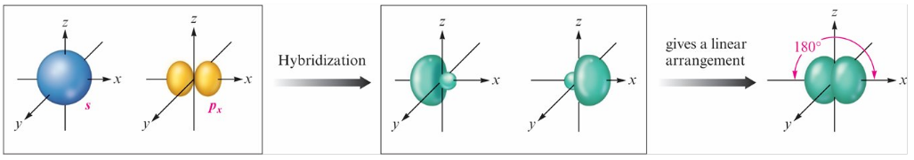
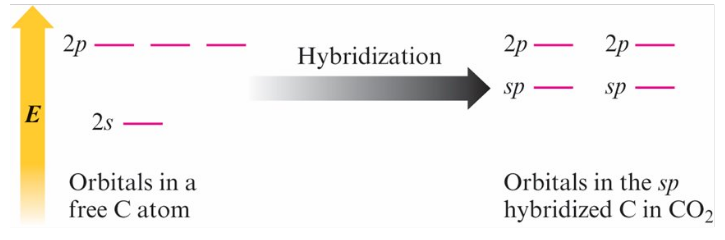
-
3 對 (Trigonal Planar) → sp2
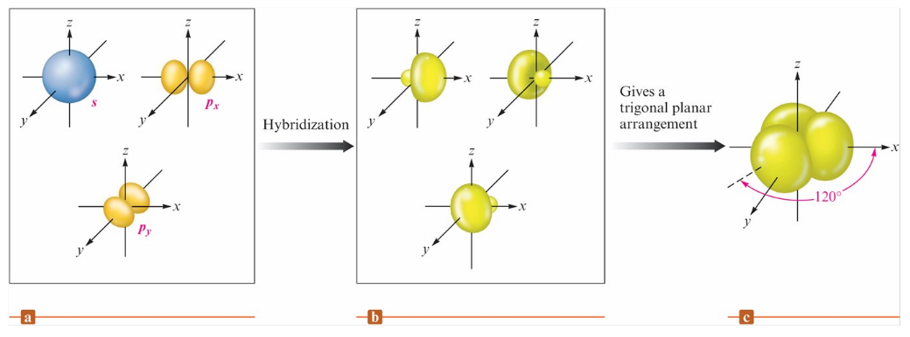
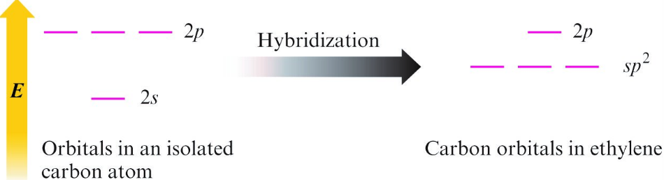
-
4 對 (Tetrahedral) → sp3
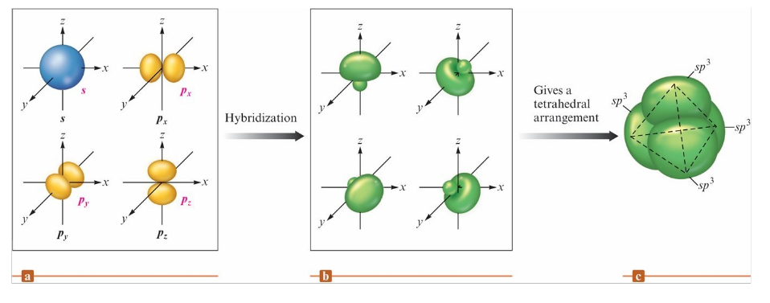
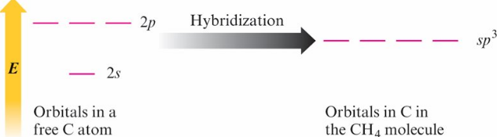
- 5 對 (Trigonal Bipyramidal) → dsp3
- 6 對 (Octahedral) → d2sp3
9-2 The Moleculer Orbital Model
- MO 理論：原子軌域 (AO) 結合成「分子軌域 (MO)」。
- 鍵結軌域 (Bonding MO)：能量比原 AO 低，有助於鍵結 (如 σ2p, π2p)。
- 反鍵結軌域 (Antibonding MO)：能量比原 AO 高，有礙於鍵結 (如 σ*2p, π*2p)。
-
MO 能量圖 (MO Energy Diagram)：
1. B2, C2, N2 (有 s-p mixing)：π(2p) 在 σ(2p) 之下
2. O2, F2, Ne2 (無 s-p mixing)：σ(2p) 在 π(2p) 之下 -
鍵序 (Bond Order)：
Bond Order = (1/2) × [ (鍵結電子數) − (反鍵結電子數) ]
(鍵序越大，鍵越強，鍵長越短)
9-3 Bonding in Homonuclear Diotomic Molecules
磁性 (Magnetism):- 順磁性 (Paramagnetic)：有未成對電子, 會被磁場吸引(如 B2, O2)
- 反磁性 (Diamagnetic)：所有電子皆成對, 會被磁場微弱排斥(如 C2, N2, F2)
10-1 Review of States of Matter
- solid 固體
- liquid 液體
- gas 氣體
10-2 Intramolecular Forces 分子間作用力
- convalent bonding 共價鍵
- ionic bonding 離子鍵
Dipole-dipole force 偶極-偶極力
具有偶極矩(dipole moments)的分子之間的庫侖靜電力, 強度約為共價鍵或離子鍵的1%
Hydrogen bonding 氫鍵
由氫原子跟高電負度原子(N、O、F)結合時形成. 因分子極性強, 且氫原子體積小, 分子間距離近. 使這種偶極-偶極力特別強, 稱為氫鍵
H2O, HF因為分子間氫鍵, 使分子分離變為氣態的能量較大, 因此沸點較高
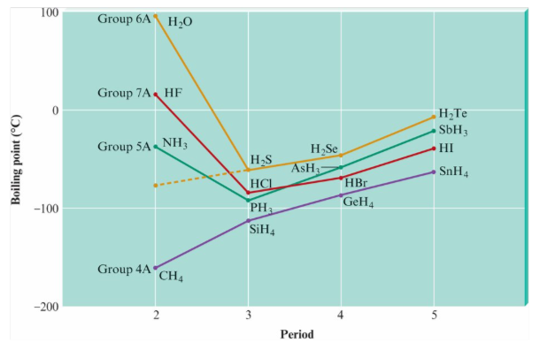
London dispersion force 倫敦分散力
當電子繞著原子核運動時, 會產生瞬時的電子分布不均, 進而產生的瞬時偶極矩可以誘導相鄰原子產生類似的偶極矩, 導致原子間產生短暫且較弱的吸引力, 稱為倫敦分散力
polarizability 極化率
表示原子電子雲發生形變形成瞬時偶極矩的難易程度. 通常具有大量電子的原子, 即原子序越大, 極化率越大
Dipole-induced dipole force 偶極-誘導偶極力
由極性分子上的偶極子會在鄰近的非極性分子的電子雲極化形成瞬時偶極矩, 此兩個分子間作用力稱為偶極-誘導偶極力
EX. Which intermolecular force below is the strongest?
- Dipole–dipole forces
- London dispersion forces
- Hydrogen bonding
Ex. Which one of the following is the strongest intermolecular force experienced by noble gases?
- London dispersion forces
- Dipole–dipole attraction
- Hydrogen bonding
- Ion–ion interactions
Ex. Methane (CH4) is a gas, but carbon tetrachloride (CCl4) is a liquid at room conditions
Which of the
following statements explains this phenomenon?
- CCl4 is a polar molecule and CH4 is not
- CCl4 and CH4 have different geometries and shapes
- CH4 exhibits hydrogen bonding and CCl4 does not
- Cl is more electronegative than H
- None of these statements is correct
Ex. Which of the following species exhibits the strongest intermolecular forces?
- CH4
- H2O
- N2
- CO
- He
10-3 The Liquad State
- surface tention 表面張力
Capillary action 毛細現象
- cohesive forces 內聚力
- adhesive forces 附著力
液體在細管中自發性上升的現象. 當內聚力大於附著力, 液面呈現凸起; 附著力大於內聚力, 液面呈凹狀
viscosity 黏度
衡量液體流動阻力的指標, 通常分子間作用力大且分子結構複雜的液體具有較高的黏度
10-4 An Introduction to Structures and Type of Solids
- Amorphous solids 非晶體固體
-
crystalline solids 晶體固體
- simple cubic 簡單立方晶格
- body centered cubic(bcc) 體心立方晶格
- face centered cubic(fcc) 面心立方晶格
- unit cell 晶胞
- lattice 晶格
X-Ray analysis of solids
透過X射線繞射, 確定晶體固體的結構. 其中的平行光束在特定角度所產生的干涉現象可用於測定原子間距
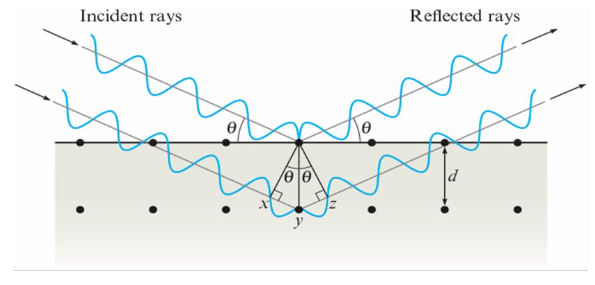
Bragg Equation
Types of crystalline solids
- ionic solids 離子固體
- molecular solids 分子固體
-
atomic solids 原子固體
- metallic solids 金屬固體
- network solids 共價網狀固體
- Group 8A
10-5 Structures and Bonding in Metal
closest packing 最密堆積
hexagonal closest packed (hcp) 六方最密堆積
aba式排列, 第三層的球直接位於第一層球的上方
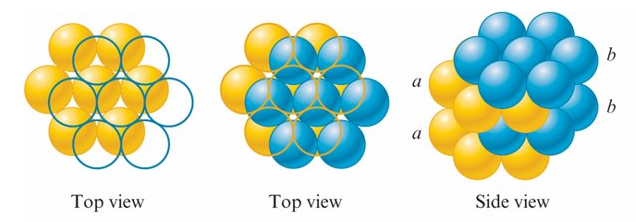
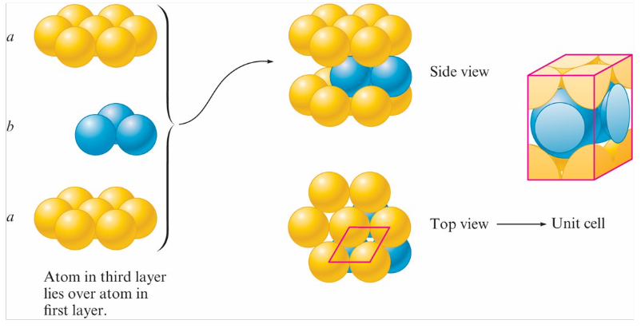
cubic closest packed (ccp) 立方最密堆積
abc式排列, 第三層的球體不會覆蓋第一層的球體
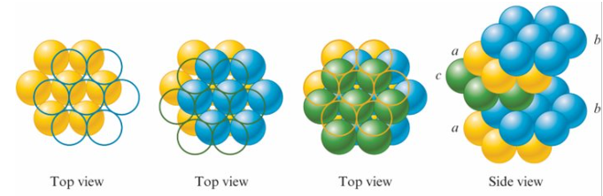
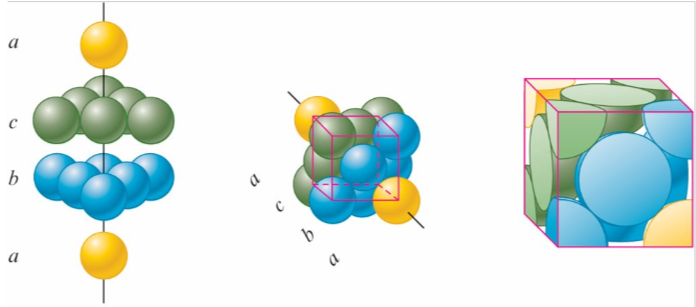
Packing efficienty 堆積效率
原子數*原子體積/晶格體積
\( \text{simple cubic} \)
\( \Rightarrow \frac{4}{3} \pi r^{3} \div (2r)^{3} = \frac{\pi}{6} \approx 0.52 \)
\( \text{body centered cubic} \)
\( \Rightarrow 2*(\frac{4}{3} \pi r^{3}) \div (\frac{4r}{\sqrt{3}})^{3} = \frac{\sqrt{3} \pi}{8} \approx 0.68 \)
\( \text{face centered cubic} \)
\( \Rightarrow 4*(\frac{4}{3} \pi r^{3}) \div (2 \sqrt{2} r)^{3} = \frac{\sqrt{2} \pi}{6} \approx 0.74 \)
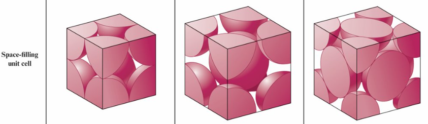
- election sea model 電子海模型
- Band Model or Molecular Orbital (MO) Model
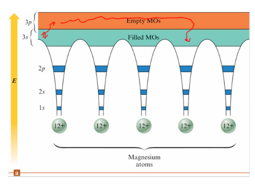
Metal alloys 合金
- Substitutional alloy 置換型合金 部分主體金屬原子被尺寸相似的其他金屬原子所取代
- Interstitial alloy 填隙型合金 在最密堆積的金屬結構中, 部分間隙被小型原子佔據
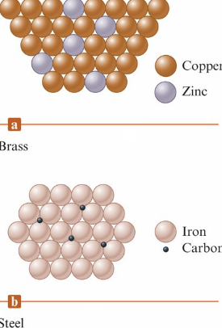
10-6 Carbon and Silicon: Network Atomic Solids
Network solids
含有方向性共價鍵的原子固體
- 本質上易碎(Brittle in nature)
- 不是有效的熱和電導體(Ineffective conductors of heat and electricity)
Diamond (鑽石)
每個碳原子被其他碳原子以四面體排列方式環繞, 由 sp3 混成碳原子軌域重疊而成
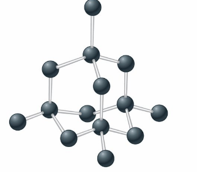
石墨 (Graphite) 可以在 2800°C 的溫度下施加 150,000 atm 的壓力轉化為鑽石
分子軌域模型 (MO model)
填充能階(filled levels)與淨空能階(empty levels)之間存在較大能隙(large gap), 電子轉移(electron transfer)困難, 為不良導體
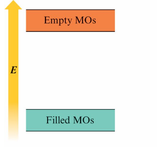
Graphite (石墨)
- 黑色, 為熱和電的導體(conductor of heat and electricity)
- 結構基於碳原子層, 排列成稠合的六元環 (fused six-membered rings)。
- 同一層的每個碳原子被另外三個碳原子以平面三角排列圍繞,鍵角為120度
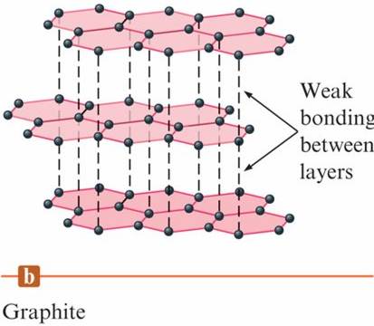
局部電子模型(localized electron model)
每個碳原子上的三個 sp3 軌域與其他三個碳原子形成 σ 鍵, 剩餘一個 2p 未混成軌域垂直於層平面
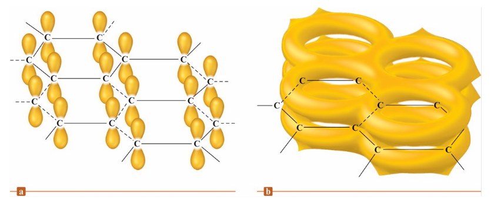
Silicon (矽)
- 構成地殼化合物的重要成分
- 不同於碳基化合物的長鏈C-C鍵, 穩定的矽化合物包含帶有矽氧鍵S-O的鏈狀結構
- 二氧化矽(Silica, SiO2)為最基本的矽氧化合物
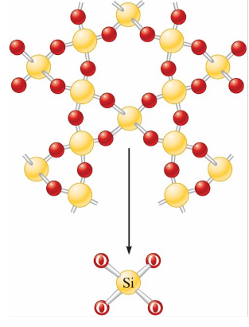
SiO2的矽原子通過與四個氧原子形成單鍵，滿足八隅體規則 (octet rule)
Silicates (矽酸鹽)
與SiO2相關的化合物, 但其氧矽比大於2:1, 需要陽離子平衡負電荷. 因此矽酸鹽含有金屬陽離子和矽氧陰離子(silicon–oxygen anions)
glass
- SiO2被加熱到1600°C以上並迅速冷卻時形成的無定形固體(amorphous solid)
- 均勻的、非結晶的冷凍溶液 (frozen solution)
- 普通玻璃是在二氧化矽熔體中加入Na2CO3等物質後冷卻而成
- 性能根據添加劑 (additives) 的不同而變化
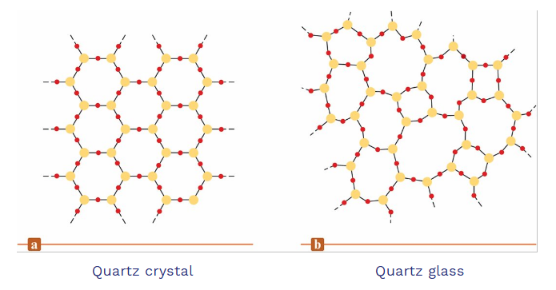
Ceramics (陶瓷)
由黏土(clay)在高溫焙燒下硬化製成的非金屬材料, 具有堅固、易碎以及耐熱和耐化學侵蝕的特性
黏土的結構
由水和二氧化碳對礦物長石的風化作用形成. 而當黏土乾燥時, 這些薄片會相互交錯鎖定, 在焙燒 (firing) 過程中, 矽酸鹽和陽離子(cations) 形成玻璃狀物質, 將高嶺石晶體結合起來
- 長石(feldspar): 一種鋁矽酸鹽(aluminosilicate), 風化後形成高嶺石
- 高嶺石(kaolinite): 由微小的薄片組成, 實驗式為Al2Si2O5(OH)4
陶瓷的用途
- 用於製造噴射發動機和汽車發動機
- 可以通過添加少量有機聚合物(organic polymers)來獲得柔性陶瓷
- 有機聚合物用於生產耐用的發動機零件、柔性超導線和微電子設備、以及義肢裝置
Semiconductors (半導體)
矽的能隙較小, 在室溫下少量電子可以躍遷到導帶, 使矽成為半導體. 在升高溫度或參雜其他元素時電導率(conductivity)增加
類型
- n 型半導體 (n-type semiconductor) 通過用比主晶體 (host crystal) 原子擁有更多價電子的原子進行摻雜(doping), 從而提高電導率的物質
- p 型半導體 (p-type semiconductor) 用比主晶體原子擁有更少價電子的原子進行摻雜的半導體。
n 型和 p 型半導體可以連接起來形成 p–n 接面 (p–n junction). 構成出色的整流器 (rectifier).
整流器: 將交流電 (alternating current) 轉換為脈動直流電 (pulsating direct current) 的裝置。
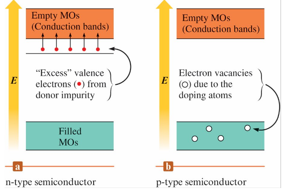
10-7 Molecular Solids 分子固體
特徵
- 分子內部具有強烈的共價鍵結, 而分子之間則為弱鍵結
- 分子間作用力(intermolecular forces)取決於分子的性質
- 不具有偶極矩(dipole moment)的分子擁有倫敦分散力(London dispersion forces)
- 當有可能形成氫鍵時, 具有偶極矩的分子會展現出更大的分子間作用力
10-8 Ionic Solids 離子固體
離子固體為穩定且高熔點的物質, 由帶相反電荷離子間較強的靜電力維繫在一起
- 二元離子固體(binary ionic solids)的結構可以通過最密堆積球體(hcp or ccp)來解釋
- 堆積球體旨在最大化靜電吸引力與最小化帶相同電荷離子之間的排斥力
Types of Holes in Closest Packed Structures
Trigonal holes
- 由同一層中的三個球體形成
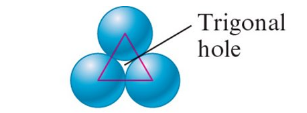
Tetrahedral holes
- 當一個球體位於相鄰層的三個球體形成的凹坑中時形成
- 在最密堆積結構中, 四面體孔的數量是堆積陰離子數量的兩倍
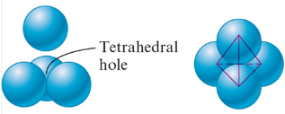
Octahedral holes
- 於最密堆積結構中相鄰層的兩組三個球體之間形成
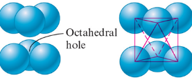
Types and properties of solids
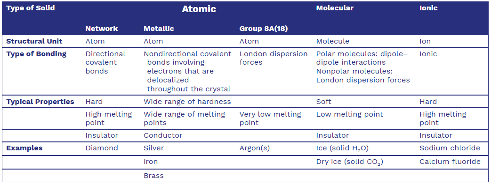
Ex. A certain metal fluoride crystallizes in such a way that the fluoride ions occupy simple cubic lattice
sites, while the metal atoms occupy the body centers of half the cubes
What is the formula for this metal fluoride?
- MF2
- M2F
- MF
- MF6
- MF8
Ex. Which of the following statements is incorrect?
- Ionic solids generally have high melting points
- Ionic solids are insulators
- The binding forces in a molecular solid include London dispersion forces
- Molecular solids generally have high melting points
A certain metal fluoride crystallizes in such a way that the fluoride ions occupy simple cubic lattice sites,
while the metal ions occupy the body centers of half the cubes
Which of the following could be the metal ion?
- The calcium ion
- The sodium ion
- The iron(III) ion
- The vanadium(IV) ion
- Any of these ions
10-9 Vapor Pressure and Changes of State 蒸氣壓與型態變化
Vaporization/Evaporation (汽化/蒸發)
- 為液體分子逸出液體表面形成氣體的過程
- 需要能量來克服分子間作用力,本質上是吸熱(endothermic)
- 汽化熱 (\(\Delta H_{\text{vap}}\)): 在1atm壓力下蒸發1莫耳液體所需的能量
蒸氣壓 (Vapor Pressure)
當冷凝速率等於蒸發速率時, 液體或蒸氣的量不再發生淨變化, 此時系統為動態平衡
- 平衡點 (equilibrium): 液體或蒸氣的量不再發生淨變化的點
- 冷凝 (condensation): 氣體變成液體的過程
- 平衡蒸氣壓 (equilibrium vapor pressure): 在平衡狀態下蒸氣的壓力
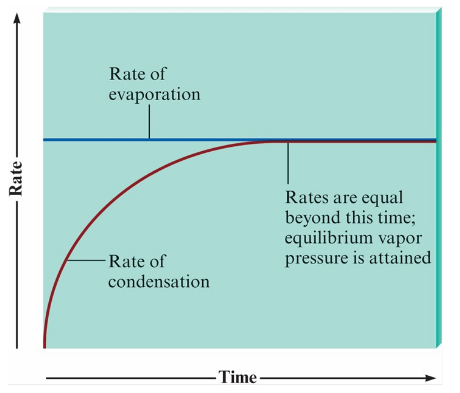
Measurement of Vapor Pressure
蒸氣壓可以根據汞柱高度的變化來確定
Vapor Pressure and Liquids
- 具有高蒸氣壓的液體是易揮發的(volatile)
- 在開放環境中蒸發發生得很快
- 液體中分子間作用力的大小決定了它的蒸氣壓
- 具有較大莫耳質量(g/mol)的物質具有相對較低的蒸氣壓
- 蒸氣壓隨溫度顯著增加
- 分子必須具有足夠的動能來克服分子間作用力
Vapor Pressure versus Temperature 蒸氣壓對溫度曲線
\[ \displaystyle \ln (P_{vap}) = -\frac{\Delta H_{vap}}{R}\left( \frac{1}{T}\right) + C \]
- \( \text{T}\) - 溫度 - 單位為克耳文 (Kelvin).
- \(\Delta H_{\text{vap}}\) - 汽化焓 - (Enthalpy of vaporization)
- \( \text{R}\) - 通用氣體常數 (Universal gas constant)
- \( \text{C}\) - 給定液體的特徵常數 (Constant characteristic of a given liquid)
The Clausius–Clapeyron equation
已知 \(\Delta H_{\text{vap}}\) 和某溫度下的 \(P_{\text{vap}}\) 值時, 就可以計算出另一溫度下的 \(P_{\text{vap}}\) 值. 在溫度 \(T_{1}\) 和 \(T_{2}\) 下
\[ \displaystyle \text{ln}\left(\frac{P_{\text{vap},T_{2}}}{P_{\text{vap},T_{1}}}\right)=\frac{\Delta H_{\text{vap}}}{R}\left(\frac{1}{T_{1}}-\frac{1}{T_{2}}\right)\]
Sublimation 昇華
固體也具有蒸氣壓, 而固體不經過液態直接變為氣態的過程則稱為昇華. 如乾冰 (dry ice) 和碘 (iodine)會有昇華現象.
Changes of State
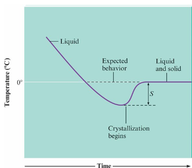
- 加熱曲線 (heating curve): 在能量以恆定速率添加的過程中, 溫度隨時間變化的圖
- 熔點(melting point): 固體和液體具有相同蒸氣壓時的溫度
- 熔化熱/熔解焓(heat of fusion / enthalpy of fusion): 固體在熔點時的焓變
- 正常沸點 (normal boiling point) 液體蒸氣壓為 1 atm 時的溫度
- 正常熔點 (normal melting point) 在 1 atm 壓力下, 固態和液態蒸氣壓相同的溫度
- 過冷(supercooled): 溫度低於熔點時, 分子卻沒有達到固態所需的有序度, 因此仍為液態
- 過熱(superheated): 液體中的蒸氣壓>大氣壓, 其氣泡在液體中形成, 並在到達表面之前破裂, 導致突沸 (bumping)
Ex. Which of the following would you expect to have the lowest vapor pressure?
- CH3OCH3
- CH3CH2OH
- CH3CH2CH3
- CH3CH2CH2CH3
- H2O
Ex. What is the vapor pressure of water at 70°C?
- 5.00 atm
- 1.20 atm
- 1.00 atm
- 0.31 atm
10-10 Phase Diagrams 三相圖
表示物質的相態(phases) 隨溫度和壓力變化的一種方法
- 三相點 (Triple point) 所有三個相 (phases) 同時存在的溫度
- 臨界點 (Critical point) 由臨界壓力和臨界溫度定義的點
- 臨界壓力 (Critical pressure) 在臨界溫度下產生液化所需的壓力
- 臨界溫度 (Critical temperature) 超過後無論施加多大壓力, 蒸氣都無法液化時的溫度
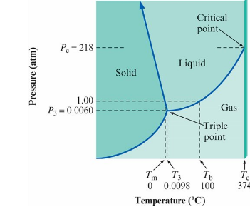
- \(T_{m}\) - 正常熔點
- \(T_{3}\) 和 \(P_{3}\) - 三相點
- \(T_{b}\) - 正常沸點
- \(T_{c}\) - 臨界溫度
- \(P_{c}\) - 臨界壓力
Phase Diagram for Water - Observations
在施加壓力時, 體積會減小\( \Rightarrow \)固體/液體邊界線具有負斜率 (negative slope) \( \Rightarrow \) 同質量的冰比同質量的液態水體積更大
Van der Waals Equation 凡得瓦方程式
修正「動力學分子理論」(kinetic molecular theory) 中所做的假設,需考慮氣體的粒子間吸引力 (interparticle attractions). 加入了凡得瓦常數\( \text{ a } \)修正
20-1 Survey of the Representative Elements
Reviewing the periodic table
- 代表元素 (representative elements): 化學性質由價層的 s 和 p 電子決定 指定為第1A族至第8A族
- 過渡金屬 (transition metals): 對應於填充 d 軌域產生. 位於週期表的中心
- 鑭系元素 (lanthanides): 對應於填充 4f 軌域
- 錒系元素 (actinides): 對應於填充 5f 軌域
- 類金屬 (metalloids / semimetals): 週期表中金屬和非金屬分界線沿線的元素.同時展現金屬和非金屬的特性
Differentiating Metals from Nonmetals
Metals
- 通過失去價電子 (valence electrons)形成陽離子 (cations)
- 表現出前一個週期 (preceding period)惰性氣體 (noble gas)的電子組態
Nonmetals
- 通過獲得電子形成陰離子 (anions)
- 表現出與其在同一週期的惰性氣體的電子組態
Atomic Size and Group Anomalies
同一族中的第一個元素與第二個元素因原子半徑的差異, 導致第一個元素表現出不同的性質
Group 1A
- 氫 (Hydrogen) 是非金屬, 鋰 (lithium) 是活潑金屬 (active metal)
- 氫可以與非金屬形成共價鍵(covalent bonds)
- 第 1A 族的其他成員通過失去價電子, 與非金屬形成離子化合物中的 1+ 陽離子
Group 2A
- 除氧化鈹 (beryllium oxide)是兩性 (amphoteric)外, 鹼土金屬氧化物均為鹼性 (basic)
- 除氧化鈹具有相當大的共價特性外, 所有2A 族金屬氧化物都是具高度離子性的
Group 3A
硼 (Boron) 表現為非金屬, 有時表現為類金屬 (semimetal). 而所有其他 3A 族元素均為活潑金屬
Group 4A
碳 (Carbon) 和矽 (silicon) 具有不同的化學性質. 碳化合物包含 C—C 鍵鏈, 但矽化合物主要包含 Si—O 鍵, 即形成 \(\pi \) 鍵的能力不同
Group 5A
- 元素氮以雙原子分子 N2 形式存在, 但元素磷形成更大的原子聚集體
- N 可以形成強 \(\pi \) 鍵, 但 P 不能
Group 6A
- 元素氧以具有雙鍵的 O2 分子形式存在, 這是其最穩定的形式
- 硫原子形成僅包含單鍵的更大聚集體
Group 7A
- 氟 (Fluorine)的電子親和力小於氯 (chlorine)
- 氟 2p 軌域的小尺寸導致較大的電子間排斥力
Abundance
約四分之一的元素自然存在於其游離態 (free states). 其餘大多數元素以化合態 (combined state) 存在
The 18 Most Abundant Elements in the Earth's Crust, Oceans, and Atmosphere
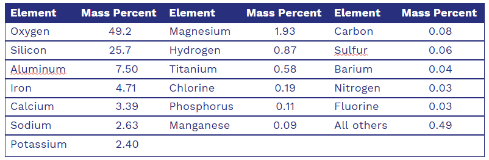
Abundance of Elements in the Human Body
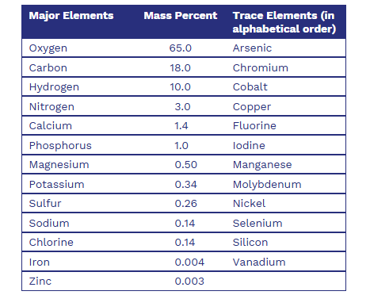
Preparation
冶金學 (Metallurgy)
- 從礦石中提取金屬的過程
- 涉及將離子還原為其元素金屬
- 碳是最常用的還原劑 (reducing agent)
metal
大多數活潑金屬使用電解 (electrolysis) 來還原
oxygen and nitrogen
- 通過液化的方式轉化為液體
- 液化 (liquefaction): 基於氣體膨脹時會冷卻的原理
- 因液態氮和氧沸點不同, 可通過蒸餾液態空氣來分離
hydrogen
可透過電解水與分解天然氣的甲烷生成
sulfur
元素形式存在於地下, 通過弗拉施法 (Frasch process) 回收
halogens
通過鹵化物鹽 (halide salts) 中陰離子的氧化獲得
20-2 The Group 1A Elements
Alkali Metals 鹼金屬
- 除了氫以外, 具有 ns1 價電子組態的元素
- 會與H2劇烈反應釋放H2
- 對於神經和肌肉的正常運作至關重要(Na+ 和 K+)
Sources and Methods of Preparation of Alkali Metals
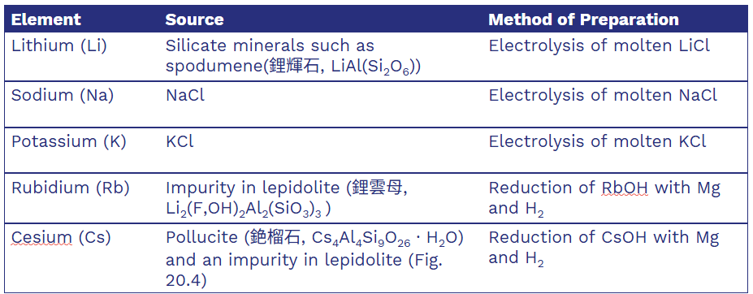
Selected Reactions of the Alkali Metals
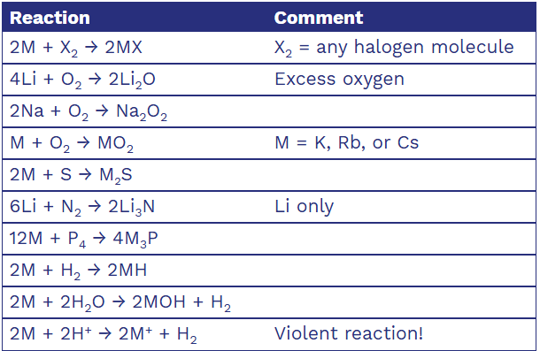
Selected Physical Properties of the Alkali Metals
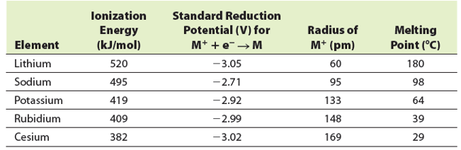
Ex. Which of the following elements is the strongest reducing agent in the gas phase?
- Li
- Na
- K
- Rb
- Cs
Ex. Which ions are very important for the proper functioning of biologic systems, such as nerves and muscles?
- Alkaline earth metal ions
- Alkali metal ions
- Oxygen ions
- Sulfur ions
- Nitrogen ions
20-3 The Chemistry of Hydrogen
Physical Properties
- 無色、無臭的氣體, 由 H2 分子組成
- 低莫耳質量(molar mass) 且無極性 (nonpolarity)
- 低沸點 (–235°C)與低熔點 (–260°C)
- 高度易燃 (Highly flammable), H2佔空氣體積 18% 至 60% 時具爆炸性
Sources
在金屬催化劑 (鎳, nickel) 存在下, 甲烷與水在高溫 (800–1000°C) 和高壓 (10–50 atm) 下反應產生 H2
- 電解水可生產純氫氣
- 汽油生產的副產品 : 具有高分子量的碳氫化合物被裂解 (cracked), 以生產可用作汽車燃料的較小分子
Use
- 用於哈伯法 (Haber process) 生產氨
- 不飽和植物油的氫化 (Hydrogenation of unsaturated vegetable oils): 氫大量用於產生碳-碳單鍵 (single bonds)
Hydrogen and Hydrides
氫化物 (Hydrides): 為含有氫的二元化合物 , 分類為離子氫化物、共價氫化物和金屬（填隙）氫化物
離子型（鹽狀）氫化物 (Ionic (Saltlike) Hydrides)
- 當氫與 1A 族和 2A族結合時形成. Ex: LiH、CaH
- 氫化物離子 H+ 作為強還原劑
- 因1s 軌域中存在 2 個電子而產生較大電子間排斥力
- 原子核將帶有 +1 的淨電荷
離子型氫化物溶於水時會產生劇烈反應並生成氫氣
共價氫化物 (Covalent Hydrides)
- 當氫與其他非金屬結合時形成. Ex: HCl、CH4和NH3
- 最重要的共價氫化物 - 水(H2O)
水的不尋常性質 (Unusual Properties of Water)
- 高沸點 (High boiling point)
- 較大汽化熱 (heat of vaporization) 和熱容 (heat capacity)
- 液態密度高於固態密度(冰的開放結構最大限度地形成氫鍵)
- 離子和極性物質的優良溶劑
- 生命過程的有效介質
金屬（填隙）氫化物 (Metallic (Interstitial) Hydrides)
由過渡金屬晶體用氫氣處理時形成, 氫分子在金屬表面解離 (dissociate)並遷移到晶體結構中佔據填隙, 這種結合方式表現為固溶體而非真正化合物
非化學計量氫化物 (nonstoichiometric hydrides) 的組成隨著金屬暴露於氫氣的時間長短而變化
加熱時會以氣體形式失去大部分吸收的氫, 為儲存氫氣以用作便攜式燃料提供了可能性
20-4 The Group 2A Elements
Alkaline Earth Metals 鹼土金屬
- 價電子組態為 ns2 的元素
- 失去兩個價電子以形成含有 M2+ 陽離子的離子化合物
- 因其氧化物呈鹼性而被稱為鹼土金屬( 例外: 氧化鈹 BeO)
- 活性較強的鹼土金屬會與H2O劇烈反應釋放H2
在 25°C 時: Ca、Sr和 Ba 與水反應劇烈. Be 和 Mg 沒有反應, 但 Mg 會與沸水反應
Importance
鈣 (Calcium, Ca)
- 存在於組成骨骼和牙齒的結構礦物質中
鎂 (Magnesium, Mg)
- 在代謝和肌肉功能中至關重要
- 因其低密度和中等強度，是種實用的結構材料
Selected Reactions of the Alkaline Earth Metals
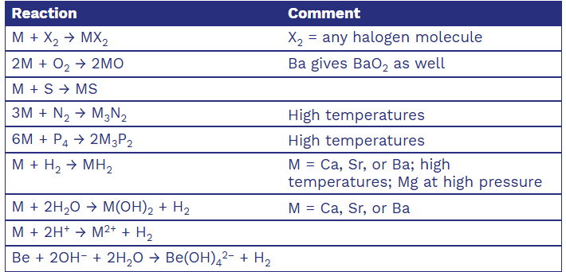
Selected Physical Properties, Sources, and Methods of Preparation
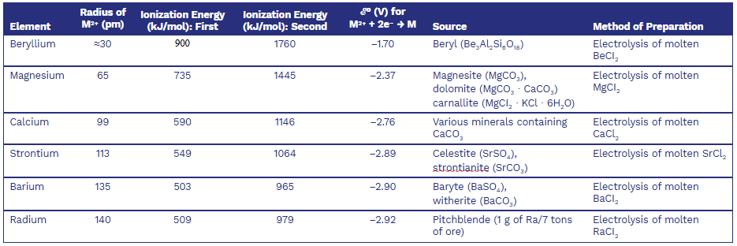
Ion Exchange
- 硬水 (Hard water): 含有 Ca2+ 和 Mg2+ 的天然水
- 硬水會與肥皂反應產生沉澱, 影響洗滌劑作用
- 透過陽離子交換樹酯, 硬水中的Ca2+ 和 Mg2+與樹酯結合, 進而軟化水質
- 陽離子交換樹脂 (Ion-exchange resin): 具有多個離子位點的巨大分子
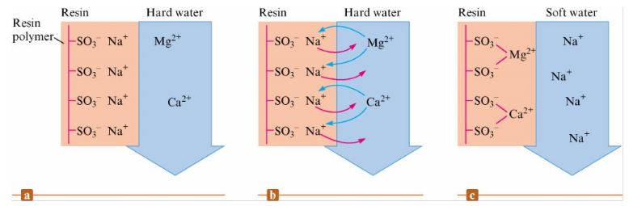
Ex. Which of the following ions interfere(s) with the action of detergents in hard water?
- Na+
- Ca2+
- Mg2+
- Ca2+ and Mg2+
- Na+, Ca2+, and Mg2+
20-5 The Group 3A Elements
價電子組態為ns2np1. 位在同族的原子量越大時, 金屬特性逐漸增加Selected Physical Properties, Sources, and Methods of Preparation
Selected Reactions of the Group 3A Elements
Boron 硼
與其他元素形成共價化合物
硼烷 (Boranes): 硼的共價氫化物化合物
極度缺電子,使其具高反應性, 會與氧氣發生放熱反應.
曾被考慮作為美國太空計畫中火箭的潛在燃料
Aluminum 鋁
- 地球上最豐富的金屬
- 具有金屬特性. 外觀有光澤, 可傳導熱和電
- 與非金屬形成共價鍵. 導致Al2O3的兩性性質 (amphoteric nature) . 和 Al2(H2O)63+ 的酸性性質
Gallium 鎵
- 異常低的熔點(29.8°C), 沸點約2400°C
- 因液態範圍溫度大, 可用於溫度計中
- 化學性質與鋁相似, 像是Ga2O為兩性物質
Indium and Thallium
Indium 銦
化學性質與鋁和鎵相似. 已知含有 1+和 3+ 離子的化合物
Thallium 鉈
化學性質完全是金屬性
Inert pair effect 惰性電子對效應
Ex. Which of the following is the most abundant metal on earth? Calcium
- Iron
- Copper
- Aluminum
- Zinc
20-6 The Group 4A Elements
價電子組態為ns2np2. 包括:碳-生命必需分子的基本組成部分. 矽-構成了地質世界的基礎元素
Properties
- 可與非金屬形成四個共價鍵, 形成四面體分子. 其中心原子為sp3混成(hybridized)
- 例子: CH4, SiF4, GeBr4, SnCl4, and PbCl4
- 碳的化學性質以碳-碳鍵為主導; 矽的化學性質以矽-氧鍵為主導
- 即碳形成 \(\pi \) 鍵有所差異. 解釋了 CO2和 SiO2的不同結構和性質
Selected Physical Properties, Sources, and Methods of Preparation
Group 4A Elements
Carbon 碳
- 元素以石墨、鑽石和C60的同素異形體形式存在
- 於有機化學中扮演重要角色
Silicon 矽
為類金屬 (Semimetal), 廣泛分布於二氧化矽 (silica) 和矽酸鹽 (silicates) 中
Germanium 鍺
為稀有元素且為類金屬 , 用於製造電晶體 (transistors) 及半導體
Tin 錫
柔軟的銀白色金屬, 常用於合金以及作為鋼鐵的保護塗層
錫的同素異形體 (Allotropes of tin):
- 白錫 (White tin) - 在常溫下穩定
- 灰錫 (Gray tin) - 在 13.2°C 以下的溫度穩定
- 脆錫 (Brittle tin) - 存在於 161°C 以上的溫度
錫疫 (Tin disease): 當暴露於低溫時，錫會變成粉末狀的灰色並崩解
Lead 鉛
- 於方鉛礦 (Galena, PbS)中提取, 熔點低, 具毒性
- 早在西元前3000年就被應用. 現代常用於鉛酸電池
Selected Reactions
Ex. What is the largest commercial use of lead?
- Gasoline
- Protective coatings for steel
- Semiconductors
- Paints
- Batteries used in automobiles
Ex. Order the following bonds from highest to lowest bond energy
- C—C, Si—Si, Si—O
- Si—O, C—C, Si—Si
- Si—Si, Si—O, C—C
- Si—O, Si—Si, C—C
- C—C, Si—O, Si—Si
20-7 The Group 5A Elements
- 價電子組態為ns2np3
- 氮 (Nitrogen) 和磷 (phosphorus)為非金屬, 能與活潑金屬形成含有3-陰離子的鹽
- 鉍 (Bismuth) 和銻 (antimony) 表現出金屬特性, 容易失去電子形成陽離子
Covalent Bonds
5A族能形成涉及 3、5 或 6 個共價鍵的分子或離子
- VSEPR 模型結構 - 角錐形 (Pyramidal)。
-
- 具有三個共價鍵與一對孤對電子 如NH3、PH3和 AsCl3...等
- VSEPR 模型 - 三角雙錐 (Trigonal bipyramidal)
-
- 具有五個共價鍵的分子
- 氮因其原子半徑小而無法形成
- 中心原子是dsp3混成
Selected Physical Properties, Sources, and Methods of Preparation
Ex. Which of the following elements has the smallest electronegativity(電負度) value?
- N
- P
- As
- Sb
Ex. What is the correct molecular structure for PCl5(g)?
- Trigonal bipyramidal
- Trigonal planar
- Tetrahedral
- Octahedral
- None of these
Ex. The ability of the Group 5A elements to form _____ greatly decreases after nitrogen
- molecules with five covalent bonds
- pi bonds
- larger molecules with single bonds
- molecules with four covalent bonds
20-8 The Chemistry of Nitrogen
- 元素態的氮均以具有強三鍵 (941 kJ/mol) 的 N2分子形式存在
- N2分子不活潑, 在正常條件下可以與幾乎所有其他元素共存而不發生反應
A Thermodynamic Perspective 熱力學觀點
因其三鍵的穩定性, 使大多數含有氮的二元化合物在分解為其元素態時會發生放熱反應.
在氨 (ammonia) 中, 將分子分解為其組成元素需要能量, 使得氨比其組成元素更穩定
Nitrogen-Based Explosives 氮基炸藥
N2 具有的穩定性是這類炸藥威力的來源之一
硝化甘油 Nitroglycerin (C3H5N3O9)
當受到突然衝擊或點燃時, 會迅速且放熱地分解，從而引起爆炸. 4 莫耳的液態硝化甘油即可產生 29 莫耳的氣態產物
三硝基甲苯 (Trinitrotoluene, TNT)
在常溫下為固體, 2 莫耳的固態 TNT 能產生 20 莫耳的氣態產物和能量
Nitrogen Fixation 固氮作用
將N2 轉化為其他含氮化合物的過程
哈伯法製氨 (The Haber Process)
- 在大約 400°C 的溫度和約 250 atm 的壓力下進行
- 使用固態氧化鐵混合少量氧化鋁和氧化鉀作為催化劑
固氮作用與燃燒 (Nitrogen Fixation and Combustion)
當空氣中的氮氣被吸入汽車發動機, 會與氧氣以顯著的速率反應形成一氧化氮 (nitric oxide). 一氧化氮進一步與氧氣反應形成二氧化氮 (nitrogen dioxide)
自然界中的固氮作用 (Nitrogen Fixation in Nature)
閃電提供能量來破壞空氣中的 N2 和 O2 分子. 產生高活性的氮原子和氧原子, 原子進一步與其他 N2 和 O2 反應形成氮氧化物, 最終變為硝酸鹽 (nitrates).
固氮細菌 (Nitrogen-fixing bacteria)
容易將氮氣轉化為對植物有用的氨和其他含氮化合物. 居住在植物的根瘤 (root nodules) 中, 能夠在土壤溫度和 1 atm 壓力下產生 NH3
Nitrogen Hydrides 氮氫化物
氨 (Ammonia) - NH3
- 具刺激性氣味的有毒無色氣體
- 用於化肥
- VSEPR 模型結構: 金字塔型 其氮原子上有一對孤對電子, 且具有三個極性的 N-H 鍵. 其結構導致高度分子間作用力, 在液態下具有強大的氫鍵作用
- 高沸點 沸點為 -33.4°C (相對於分子量相近的物質而言較高)
- 表現為鹼性 與酸反應產生銨鹽(Ammonium salts). 例如與鹽酸反應生成氯化銨
- \[ NH_3(g) + HCl(g) \rightarrow NH_4Cl(s) \]
聯氨/肼 (Hydrazine) - N2H4
- 無色液體, 帶有類似氨的氣味
- 每個氮原子為 sp3 混成軌域, 鍵角接近 109.5°
- 沸點/凝固點: 113.5°C / 2°C 較高的沸點顯示極性的聯氨分子之間存在顯著的氫鍵作用, 即有較大分子間作用力
-
用途:
- 火箭推進劑（燃料）
- 製造塑料的發泡劑（吹氣劑）
- 生產農業殺蟲劑 / 農藥
- 與鹵素發生劇烈反應
-
取代聯氨 (Substituted Hydrazines)
- 化合物中一個或多個氫原子被其他基團取代, 基本用作火箭燃料
- 範例: 甲基聯氨 (Monomethylhydrazine)
Nitrogen Oxides 氮的氧化物
氮能形成一系列的氧化物, 其氧化態範圍從 +1 到 +5
- \(+1\) : 一氧化二氮 (\(N_{2}O\)) — 俗稱笑氣
- \(+2\) : 一氧化氮 (\(NO\))
- \(+3\) : 三氧化二氮 (\(N_{2}O_{3}\))
- \(+4\) : 二氧化氮 (\(NO_{2}\)) 或 四氧化二氮 (\(N_{2}O_{4}\))
- \(+5\) : 五氧化二氮 (\(N_{2}O_{5}\))
一氧化二氮 (Dinitrogen Monoxide) - N2O
- 脂溶性高
- 應用在溫和的麻醉劑
- 應用於氣霧劑罐（噴霧罐）中的推進劑
- 可由土壤中的微生物產生
- 吸收紅外線輻射來調控地球大氣（溫室氣體效應）
一氧化氮 (Nitrogen Monoxide) - NO
- 在正常條件下為無色氣體
- 為生物系統中的調節劑（信號分子）
-
在實驗室中, 通過 6M 的硝酸與銅反應生成
\[ 8H^+(aq) + 2NO_3^-(aq) + 3Cu(s) \rightarrow 3Cu^{2+}(aq) + 4H_2O(l) + 2NO(g) \]
- 一氧化氮在空氣中會立即被氧氣 (\(O_{2}\)) 氧化成紅棕色的二氧化氮 (\(NO_{2}\))
-
在熱力學上被認為是不穩定的, 會分解形成一氧化二氮與二氧化氮
\[ 3NO(g) \rightarrow N_2O(g) + NO_2(g) \]
-
一氧化氮的結構 - 分子軌域模型 (Molecular Orbital Model)
- 含有奇數個電子
- 其鍵級（Bond order）為 2.5
- 由於 NO 擁有一個高能電子，它極易被氧化形成亞硝醯離子 NO+. 即移除一個反鍵電子（Antibonding electron）
- 生成的離子 NO+ 鍵結強度應比 NO 更強（鍵級從 2.5 增加至 3）
Oxyacids of Nitrogen - Nitric Acid(硝酸)
- 無色、發煙的液體, 具有刺激性氣味
- 沸點為83°C
- 用於製造氮基爆炸物和硝酸銨 (化肥)
- 通過奧斯瓦爾德製程 (Ostwald process) 進行商業化生產
奧斯瓦爾德製程 (Ostwald Process)
淨反應: \(NH_{3}+2O_{2}\longrightarrow HNO_{3}+H_{2}O\)
硝酸的濃度與性質
- 初始濃度: 奧斯瓦爾德製程生產的硝酸水溶液質量百分比濃度約為 50%
- 提純: 可通過蒸餾提高到 68% 通過使用濃硫酸處理(脫水)提高到 95%
- 穩定性: 在陽光下會分解
Ex. Nitrogen fixation:
- is used to manufacture ammonia
- transforms elemental nitrogen into nitrogen-containing compounds
- is used to recover sulfur from underground deposits
- is used to produce nitric acid
20-9 The Chemistry of Phosphorus
Phosphorus and Nitrogen
- 氮具備較大的電負度
- 磷原子的尺寸較大
- 氮具形成強 \(\pi \) 鍵的能力： 氮傾向於形成三鍵（如 \(N\equiv N\)），而磷則傾向於形成單鍵
- 磷具有可利用的空價 \(d\) 軌域, 使磷能形成擴充價殼層（如 \(PCl_{5}\)）
Allotropes of Phosphorus 磷的同素異形體
白磷 (White phosphorus)
- 包含四面體結構的 \(P_{4}\) 分子
- 具有高度活性且有劇毒
- 與空氣接觸會立即自燃起火, 通常儲存於水中以隔絕空氣
黑磷 (Black phosphorus)
- 具有晶體結構（常與石墨烯/黑磷烯類比）
- 活性較低（最穩定的同素異形體）
- 透過在高壓下加熱白磷或紅磷獲得
紅磷 (Red phosphorus)
- 無定形結構（Amorphous）, 包含 \(P_{4}\) 單元組成的鏈狀結構
- 性質較穩定, 常見於火柴盒側面的摩擦面
- 在 1 大氣壓、隔絕空氣的條件下加熱白磷獲得
Phosphides 磷化物
含有 \(P^{3-}\) 陰離子的離子化合物. 如磷化鈉 (\(Na_{3}P\)) 和 磷化鈣 (\(Ca_{3}P_{2}\)).
磷化鹽類會與水發生劇烈反應, 產生磷化氫
磷化氫 (\(PH_{3}\)) : 無色、有毒的氣體, 其化學結構與氨類似, 具金字塔型結構, 鍵角為 \(94^{\circ }\)
Phosphorus Oxides 磷的氧化物
磷與氧氣反應生成的氧化物中, 磷的氧化態主要為 \(+5\) 和 \(+3\)
- 三氧化二磷 (\(P_{4}O_{6}\)): 由元素磷在有限的氧氣供應下燃燒而成
- 五氧化二磷 (\(P_{4}O_{10}\)): 在氧氣充足(過量)時生成
Phosphorus Oxyacids - Phosphoric Acid(磷酸)
- Diprotic acid: 二元酸
- Monoprotic acid: 一元酸
正磷酸 (Orthophosphoric Acid)
-
為五氧化二磷 (\(P_{4}O_{10}\)) 與水反應後的產物
\[ P_4O_{10}(s) + 6H_2O(l) \rightarrow 4H_3PO_4(aq) \]
- 純磷酸 (\(H_{3}PO_{4}\)) 為白色固體
- 熔點\(42^{\circ }C\)
- 為弱酸（第一段解離常數 \(K_{a1}\approx 10^{-2}\)）。
- 是極弱的氧化劑（不易發生還原反應）
亞磷酸 (Phosphorus Acid)
- 為三氧化二磷 (\(P_{4}O_{6}\)) 與水反應後的產物
- 屬於二元酸(分子式的三個 \(H\),僅有兩個可解離)
次磷酸 (Hypophosphorus Acid)
- 屬於一元酸 (僅有一個 \(H\) 可解離)
Phosphorus in Fertilizers
磷對於植物生長至關重要. 土壤中雖然含有大量的磷, 但多以難溶性礦物(Insoluble minerals)的形式存在, 導致植物無法直接吸收利用
磷肥的種類與製備
-
普通過磷酸鈣（Superphosphate of lime）
- 透過硫酸處理磷礦石所製造的產品
- 含有硫酸鈣二水合物 (\(CaSO_{4}\cdot 2H_{2}O\)) 與磷酸二氫鈣一水合物 (\(Ca(H_{2}PO_{4})_{2}\cdot H_{2}O\)) 的混合物
-
重過磷酸鈣（Triple phosphate)
- 化學式\(Ca(H_{2}PO_{4})_{2}\)
- 由磷酸處理磷礦石後生成
-
磷酸二氫銨（Ammonium dihydrogen phosphate)
- 化學式\(NH_{4}H_{2}PO_{4}\)
- 由氨與磷酸反應後生成
20-10 The Group 6A Elements
包含氧 O、硫 S、硒 Se、碲 Te、釙 Po 等元素
- 與金屬反應時獲得 2 個電子, 達到惰性氣體電子組態. 在離子化合物中形成 \(2–\) 陰離子
- 與非金屬形成共價鍵, 元素之間形成共價鍵結
- 與氫結合形成一系列通式為 \(H_{2}X\) 的共價氫化物（例如 \(H_{2}O\)、\(H_{2}S\)）
- 除氧以外, 具有可利用價 \(d\) 軌域的元素, 能形成中心原子被超過 8 個電子包圍的分子（超價分子）
- 範例： \(SF_{4}\)、 \(SeBr_{4}\) 和 \(TeI_{4}\)。
Selenium and Polonium 硒與釙
硒 (Selenium, Se)
用於電子工業
釙 (Polonium, Po)
具有劇毒且具有放射性
Ex. What is the correct molecular structure for SeF6?
- Trigonal bipyramidal
- Trigonal planar
- Tetrahedral
- Octahedral
- None of these
20-11 The Chemistry of Oxygen
Present in
- 大氣: 以氧氣 (\(O_{2}\)) 和臭氧 (\(O_{3}\)) 的形式存在
- 土壤與岩石: 存在於氧化物、矽酸鹽和碳酸鹽礦物中
- 水體: 大量的水 (\(H_{2}O\)) 及溶解氧
- 人體: 構成生物分子的重要元素
Oxygen
- 佔地球大氣體積的 21%
- 無色氣體, 液態為淡藍色液體
- 沸點/凝固點: -183°C / -219°C
- 本質上具有順磁性 (Paramagnetic)
Ozone
由共振結構表示, 其孤對電子比成鍵電子對需要更大的空間, 導致鍵角略小於120° (約117°)
- 製備 通過純氧氣進行放電處理, 電能會破壞部分 \(O_{2}\) 分子的鍵結。產生的氧原子與其他 \(O_{2}\) 分子反應生成 \(O_{3}\)
- 穩定性 在 25°C 和 1atm 下, 穩定性低於氧氣
- 物理性質 淡藍色、具高度毒性的氣體
應用與特性
- 強氧化劑(Oxidizing agent)
- 水處理:用於城市供水處理及農產品採收後的清洗
- 優點: 不會留下有毒殘留物
- 缺點: 容易發生二次污染 (因為臭氧不穩定, 無法長效殺菌)
臭氧層 (Ozone Layer)
自然存在於高層大氣中. 可吸收紫外線 (UV), 防止輻射抵達地球表面
- 當\(O_{3}\) 分子吸收能量時, 會裂解為 \(O_{2}\) 和 \(O\)
- 若 \(O_{2}\) 與 \(O\) 碰撞, 除非有「第三體」（Third body）吸收能量, 否則無法維持 \(O_{3}\) 狀態
- 第三體會將能量轉化為動能, 使紫外線輻射轉化為熱能
Ex. How many forms of elemental oxygen are there under standard temperature and pressure?
- 1
- 2
- 3
- 4
20-12 The Chemistry of Sulfur
為游離元素的大型礦床, 在自然界中以單質硫的形式存在
- 方鉛礦 (Galena, \(PbS\))
- 辰砂/朱砂 (Cinnabar, \(HgS\))
- 黃鐵礦 (Pyrite, \(FeS_{2}\))
- 石膏 (Gypsum, \(CaSO_{4}\cdot 2H_{2}O\))
- 瀉利鹽 (Epsomite, \(MgSO_{4}\cdot 7H_{2}O\))
- 鈣芒硝 (Glauberite, \(Na_{2}Ca(SO_{4})_{2}\))
透過弗拉施法回收. 將過熱水泵入地下礦床以熔化硫, 利用空氣壓力將熔化的硫強行壓送至地面
Sulfur Oxides 硫的氧化物
一氧化硫 (SO)
- 性質極度不穩定
- \(SO\) 中硫（S）與氧（O）原子間的 \(\pi \) 鍵結合力，比 \(O_{2}\) 分子中氧原子間的 \(\pi \) 鍵結合力弱
二氧化硫 (\(SO_{2}\))
- 無色氣體，具有刺激性氣味。
- 當硫在空氣中燃燒時產生（是形成酸雨的主要原因）。
- 液化： 在 \(1\) 大氣壓下，於 \(-10^{\circ }C\) 時冷凝為液態。
- 應用：高效的抗菌劑。用於保存儲藏的水果（防腐處理）
三氧化硫 (\(SO_{3}\))
為二氧化硫 (\(SO_{2}\)) 與氧氣 (\(O_{2}\)) 反應的產物. 在缺乏催化劑的情況下，此反應進行得非常緩慢
Oxyacids of Sulfur 硫的含氧酸
亞硫酸 (Sulfurous acid)
為二氧化硫 (\(SO_{2}\)) 溶解於水中的產物
硫酸 (Sulfuric acid)
為三氧化硫 (\(SO_{3}\)) 與水發生劇烈反應後的產物. 其本質上為二元酸（Diprotic）
Sulfuric Acid 硫酸
在工業製備通常透過接觸法 (Contact process) 生產
主要用途:
利用磷礦石生產化肥、用於鉛蓄電池（電池水）、石油精煉、鋼鐵製造(如酸洗製程)
脫水劑 Dehydrating Agent
硫酸對水具有強大的親和力, 可作為脫水劑
- 氣體乾燥: 用於分離（乾燥）不與其發生反應的氣體，例如氧氣、氮氣和二氧化碳。
- 分離過程: 將氣體通入濃硫酸溶液中進行鼓泡處理（Bubbling）
- 脫水作用: 能從不含分子水的物質中, 以 2:1 的比例脫去氫和氧原子
Ex. What is the correct molecular structure for SO3(g)?
- Trigonal bipyramidal
- Trigonal planar
- Tetrahedral
- Octahedral
- None of these
20-13 The Group 7A Elements
包含氟 F、氯 Cl、溴 Br、碘 I、砈 At 等元素
- 價電子組態為ns2np5
- 具有高度反應性
- 屬於非金屬元素, 其性質隨原子序增加呈現規律性的變化
- 由於原子半徑極小, 電子間排斥力較大, 氟 (F) 的電子親和力較低. \(F_{2}\) 分子的鍵能較小
- 自然界中無法以游離元素（單質）形式存在. 通常以鹵離子 (\(X^{–}\)) 的形式存在於各種礦物及海水中
- 具有極高的電負度（負電性）值
- 與非金屬形成極性共價鍵. 與處於低氧化態的金屬形成離子鍵
Trends in Selected Physical Properties
Some Physical Properties, Sources, and Methods of Preparation
Hydrogen Halides 鹵化氫
制備過程
反應劇烈程度
- 氟與氫混合時, 反應會以爆炸般的威力進行
- 氫與氯在黑暗中共存時幾乎不反應, 但在紫外線照射下會迅速反應
- 溴與碘與氫的反應速率較慢
酸性行為
- 當溶解於水中時, 表現為酸性並能完全解離(強酸)
- 氟化氫 (HF)在水中屬於弱酸
- 酸性強度順序\(HI > HBr > HCl \gg HF\) (註：隨著鹵素原子半徑增大, 鍵能減弱, 越容易釋放氫離子, 酸性越強)
氫鹵化物的物理性質
Hydrohalic Acids 氫鹵酸
氫鹵酸是指鹵化氫的水溶液
氫氯酸(鹽酸) Hydrochloric acid
用於鋼鐵在鍍鋅(Galvanization)前的清洗處理
氫氟酸 Hydrofluoric acid
用於蝕刻玻璃. 反應原理: 與玻璃中的二氧化矽反應生成四氟化矽, 也解釋了為什麼氫氟酸不能儲存在玻璃容器中
Halogen Oxyacids and Oxyanions 鹵素含氧酸與含氧陰離子
- 除了氟以外, 所有鹵素都能與氧原子結合, 形成一系列的含氧酸
- 酸的強度與連接在鹵素原子上的氧原子數量成正比
- \(HClO_{4}\)（過氯酸）> \(HClO_{3}\)（氯酸）> \(HClO_{2}\)（亞氯酸）> \(HClO\)（次氯酸）
Chlorine Series - Oxyacids and Oxyanions
過氯酸 (\(\text{HOClO}_{3}\) 或 \(\text{HClO}_{4}\)) Perchloric acid
- 性質: 是一種強酸和強氧化劑
- 穩定性: 是氯系列中唯一可以分離出純物質的成員
- 其他酸的特性: 該系列的其他含氧酸僅存在於水溶液中
- 鹽類: 含有這些含氧酸陰離子的鹽類(如次氯酸鈉、氯酸鉀、過氯酸銨等)則廣泛存在
氧氯陰離子(Oxychloro Anions)的結構
次氯酸 (\(\text{HOCl}\)) Hypochlorous acid
-
將氯氣溶解在冷水中時形成
\[ \text{Cl}_2(aq) + \text{H}_2\text{O}(l) \rightleftharpoons \text{HOCl}(aq) + \text{H}^+(aq) + \text{Cl}^-(aq)\]
- 歧化反應 (Disproportionation reaction): 在此反應中, 給定的元素同時被氧化和還原.
- 次氯酸及其鹽類是強氧化劑, 其溶液被用作消毒劑和家用漂白水
氯酸鹽 Chlorate Salts
為強氧化劑, 可用作除草劑或煙花和爆炸物中的氧化劑
Fluorine Series - Oxyacids and Oxides
- 含氧酸: 僅形成一種含氧酸, 即次氟酸 (\(\text{HOF}\))
- 氧化物(氟化物): 形成兩種化合物（氧的氟化物）即二氟化氧、二氟化二氧
二氟化氧 Oxygen difluoride (\(\text{OF}_{2}\))
淡黃色氣體, 沸點-145°C. 為強氧化劑, 當氟氣通入稀釋的氫氧化鈉溶液中時形成
二氟化二氧 Dioxygen difluoride (\(\text{O}_{2}\text{F}_{2}\))
為橙色固體, 於等莫耳混合的氟氣和氧氣中進行放電處理後製得
20-14 The Group 8A Elements
其價電子組態為填滿的 s 和 p 軌域, 導致化學性質極不活潑. (氦為1s2或 2s2, 其他元素為 ns2np6)
Selected Properties
Helium 氦
- 來源: 天然氣礦藏
- 由放射性元素的 \(\alpha \) 粒子衰變產生
- 不形成化合物(在一般條件下)
- 用於冷卻劑、火箭燃料的加壓氣體、深海潛水氣體混合物
Neon and Argon 氖與氬
氖 (\(\text{Ne}\))
不形成化合物(在一般條件下), 常用於霓虹燈招牌
氬 (\(\text{Ar}\))
在某些特定情況下能形成化學鍵. 常用在白熾燈泡中提供非腐蝕性氣氛(保護燈絲)
Krypton and Xenon 氪與氙
能形成許多穩定的化學化合物. 如四氟化氙（Xenon tetrafluoride), 一種穩定且無色的晶體
氙的氟化物與水反應會生成氟化氫與含氧化合物(oxycompounds)
Ex. Which of the following statements is true?
- Because noble gases are highly reactive, many compounds containing elements from Group 8A exist
- Because noble gases are rather nonreactive, no compounds containing elements from Group 8A exist
- Although noble gases are highly reactive, few compounds containing elements from Group 8A exist
- Although noble gases are rather nonreactive, some compounds containing elements from Group 8A exist
21-1 The Transition Metals: A Survey
Transition Metals – Properties
其通性與電子組態在給定的週期(橫排)和給定的族(直行)內,表現出極大的相似性. 歸因於內層電子是最後被添加的電子
- d 區過渡金屬接收 \(d\) 電子
- 鑭系和錒系元素接收 \(f\) 電子
- 鍵結能力: 這些內層電子不容易參與化學鍵結
物理與化學變異性
- 表現出典型的金屬行為. 擁有金屬光澤以及高導電性和導熱性
-
物理性質表現出很大差異性
- 熔點: 鎢的熔點為 3400°C ; 汞的熔點為 25°C
- 硬度: 鐵和鈦堅硬且強韌, 而銅和金則相對柔軟
-
化學反應性差異. 如某些過渡金屬容易反應形成氧化物
- 保護性氧化層: 鉻、鎳、鈷的氧化物會緊密附著在金屬表面
- 非保護性氧化層: 鐵的氧化物(鐵鏽)會剝落, 使新的金屬表面持續暴露並腐蝕
Forming Ionic Compounds – Trends
- 通常會有多於一種的氧化態(價數)
- 陽離子(Cations)通常是錯離子(Complex ions), 被一定數量的配位基包圍
- 配位基(Ligands)表現為路易斯鹼 (Lewis bases) 的分子或離子
- 範例： \(\text{[Co(NH}_{3}\text{)}_{6}\text{]Cl}_{3}\) 含有 \(\text{Co(NH}_{3}\text{)}_{6}{}^{3+}\) 陽離子和 \(\text{Cl}^{–}\) 陰離子
- 錯離子中的過渡金屬離子可以吸收特定波長的可見光, 使化合物具有顏色
- 含有未成對電子, 使化合物具有順磁性 (Paramagnetic)
First-Row Transition Metals – Electron Configurations
- 其電子組態優先填滿\(4s\) 軌域, 再填充\(3d\) 軌域
- 例外: 鉻(Cr)、銅(Cu)
- 具有相同能量的一組軌域稱為簡併軌域 (degenerate orbitals)
離子化趨勢
因為在離子狀態下 \(3d\) 軌域的能量顯著低於 \(4s\) 軌域的能量, 導致第一列過渡金屬離子不含 \(4s\) 電子
範例: \(\text{Ti} : [\text{Ar}]4s^{2}3d^{2} \quad \text{Ti}^{3+} : [\text{Ar}]3d^{1}\)
Oxidation States and Ionization Energy
過渡金屬可以通過失去一個或多個電子來形成各種不同的離子
- 對於前五個元素（Sc 到 Mn), 最大可能的氧化態與失去所有 4s 和 3d 電子有關. 最大氧化態在週期表上從左向右逐漸增加
- 第三游離能的增加速度快於第一游離能, 證明了在週期表中從左向右移動時 3d 軌域的能量顯著下降
Standard Reduction Potentials 標準還原電位
金屬作為還原劑的半反應(與常規半反應的方向相反)
電位值最正的金屬是最佳的還原劑
標準氫電極 (SHE)
- 此反應$E^\circ = 0$, 是所有還原電位的基準點
-
除了銅以外, 所有金屬都能在 1M 的強酸水溶液中, 將氫離子還原成氫氣
\[ \text{M}(s) + 2\text{H}^+(aq) \rightarrow \text{H}_2(g) + \text{M}^{2+}(aq) \]
- 第一列過渡金屬的還原能力, 隨著週期由左至右逐漸減弱. 即越往右邊的金屬, 越不容易失去電子(被氧化). 例外: Cr、Zn
4d and 5d Transition Series
4d 和 5d 系列金屬的原子尺寸相似
鑭系收縮 Lanthanide contraction
在週期表中從左向右移動時, 由於核電荷增加(即有效核電荷增大), 抵消了從一個主量子能階轉移到下一個主量子能階時(即從 4d 到 5d)通常會出現的尺寸增大趨勢, 進而使原子半徑減小
Ex. Which of the following metal ions has a d6 electron configuration?
- Mn2+
- Cr2+
- Fe3+
- Co3+
Ex. Which of the following metal ions has a d8 electron configuration?
- Zn2+
- Ni2+
- Cr3+
- Cu+
21-2 The First-Row Transition Metals
Scandium 鈧 (Sc)
- 為稀有元素, 在化合物中以 +3 氧化態存在
- 化學性質與鑭系元素 (lanthanides) 非常相似
- 其大多數化合物為無色且具抗磁性 (diamagnetic)
- 金屬鈧是透過電解熔融的 \(\text{ScCl}_3\) 製備而成
Titanium 鈦 (Ti)
其金屬為低密度且高強度. 常用於噴射發動機, 以及製造化工產業的管線、泵浦和反應容器
二氧化鈦 Titanium oxide - TiO2
高度不透明的物質。常用作紙張、油漆和塑料中的白色顏料. 其主要礦石為金紅石 (Rutile)和鈦鐵礦(Ilmenite)
氧化態 oxidation state
- 常以鈦(IV)氧化態存在於化合物中
- 鈦(III)化合物透過還原鈦(IV)價態製得. 在水溶液中以紫色的 Ti(H2O)63+ 離子形式存在, 會被空氣緩慢氧化成鈦(IV)
- 鈦(II)在水溶液中不穩定. 常以固態形式存在於 TiO 或通式為 TiX2 的二鹵化物中
Vanadium 釩 - V
- 具有高硬度且耐腐蝕特性, 用於與鈦、鐵組成合金
- 純金屬形式可從熔鹽的電解還原中提取
- 五氧化二釩 V2O5為生產硫酸時非常有用的工業催化劑
- 主要氧化態為釩(V)價態
Chromium 鉻 - Cr -
- 質地堅硬且脆, 透過產生一層緻密且肉眼看不見的氧化層來保持表面光亮
- 其化合物中的氧化態通常為 +2 +3 或 +6
-
主要礦石為鉻鐵礦(FeCr2O4). 可用碳還原生產鉻鐵合金(Ferrochrome), 用於製造不鏽鋼
\[ FeCr_2O_4(s) + 4C(s) \rightarrow Fe(s) + 2Cr(s) + 4CO(g) \]
重要離子與反應
- 鉻離子 Cr2+: 在水溶液中是強效還原劑
-
鉻(VI)氧化物(紅色): 溶解於水中會形成強酸性的紅橙色溶液. 鹼化後可獲得鉻酸鹽 CrO42-
\[2\text{CrO}_3(s) + \text{H}_2\text{O}(l) \rightarrow 2\text{H}^+(aq) + \text{Cr}_2\text{O}_7^{2-}(aq)\]
- 鉻酸洗液: CrO3與濃硫酸的混合物, 具強氧化性, 可除去實驗玻璃儀器上的有機物
氧化還原能力 鉻(VI)
- 二鉻酸根 Cr2O7 2- 還原成 Cr(III)氧化態 , 其氧化能力受 pH 值影響
- 鉻酸根 CrO42- 存在於鹼性溶液中, 氧化能力較弱
Manganese 錳 - Mn -
- 用於生產硬鋼. 這種硬鋼可用於製造碎石機、銀行金庫和裝甲板
- 來源於錳結核, 發現於洋底, 其呈球狀岩石形式, 這些岩石含有錳、鐵的氧化物混合物, 以及微量的鈷、鎳和銅
- 存在於從 +2 到 +7 的所有氧化態
Iron 鐵 -Fe-
- 含量最豐富的重金屬, 呈現白色且有光澤
- 對氧化劑具有高反應性, 如鐵在潮濕空氣中會迅速氧化形成鐵鏽
- 鐵的化學性質主要涉及其 +2 和 +3 氧化態
Cobalt 鈷 - Co -
- 屬於稀有元素
- 呈現藍白色外觀
- 主要礦石包括方鈷礦 (Smaltite, \(\text{CoAs}_{2}\)) 和硫鈷礦 (Cobaltite, \(\text{CoAsS}\))
- 用於合金中, 如不鏽鋼和鎢鉻鈷合金(stellite)
- 鈷的化學性質主要涉及其 +2 和 +3 氧化態
- 能形成種類廣泛的配位化合物(錯化合物)
Typical Compounds of Cobalt
Nickel 鎳 - Ni -
- 銀白色的金屬, 通常在礦石中與砷、銻和硫結合存在
- 具有高導電性和導熱性, 以及很強的抗腐蝕性
- 用於電鍍活性金屬或生產合金, 如不鏽鋼
- 在化合物中主要以 +2 氧化態存在
Typical Compounds of Nickel
Copper 銅 - Cu -
- 廣泛存在於含有硫化物、砷化物、氯化物和碳酸鹽的天然礦石中
- 因其高導電性和抗腐蝕性而備受重視
- 用於水管和電氣應用(電線、電纜)
- 為多種合金的成分, 例如黃銅、純銀和K金
-
暴露在空氣中會腐蝕. 產生一層綠色銅綠(Patina), 其成分為鹼式硫酸銅、鹼式碳酸銅
\[2\text{Cu}(s)+\text{H}_{2}\text{O}(g)+\text{CO}_{2}(g)+\text{O}_{2}(g)\longrightarrow \text{Cu}_{2}(\text{OH})_{2}\text{CO}_{3}(s)\]
- 銅的化學性質主要涉及 +2 氧化態
含銅合金 Alloys Containing Copper
Zinc 鋅 - Zn -
- 白色且有光澤的高活性金屬
- 從閃鋅礦 ZnS 中提煉, 閃鋅礦常與方鉛礦 PbS 一起伴生
- 為優秀的還原劑, 且有迅速失去光澤（變色/表面鈍化）的傾向
- 常用於鍍鋅鋼材(保護鋼鐵防鏽)
- 在化合物中僅以 +2 氧化態形式存在(形成無色鹽類)
21-3 Coordination Compounds
配位化合物又稱為錯合物或絡合物. 其中包含一個或多個中心原子或離子(通常是過渡金屬)與周圍多個配位基(ligands)以配位鍵結合而成
- 過渡金屬的多種氧化態和配位基的多樣性, 使配位化合物的種類極其豐富
- 許多配位化合物具有鮮豔的顏色源於中心金屬離子的 d 軌域電子躍遷吸收可見光所致
- 根據其含有的未成對電子數量, 配位化合物可能表現出順磁性(Paramagnetic)或反磁性(Diamagnetic)
- 具有特定的幾何結構. 如八面體(Octahedral, 配位數 6)、四面體(Tetrahedral, 配位數 4)
Coordination Number 配位數
- 在錯離子中, 中心金屬離子與配位基(Ligand)之間所形成的共價鍵(配位鍵)數量
-
配位數通常在 2 到 8 之間變化, 具體取決於過渡金屬離子的大小、電荷以及電子組態.
- Linear(two ligands)
- Tetrahedral or square planar(four ligands)
- Octahedral(six ligands)
- 同一種金屬離子在不同的環境下可以擁有不只一種配位數
Ligands 配位基
具有孤對電子(Lone electron pair)的中性分子或離子, 該電子對可用於與金屬離子形成化學鍵
配位共價鍵 (Coordinate covalent bond)
金屬與配位基之間形成的化學鍵, 源於路易士鹼(Lewis base, 即配位基)與路易士酸(Lewis acid, 即金屬離子)之間的交互作用
配位基的類型 Types of Ligands
-
單牙基配位基(Monodentate/unidentate ligand))
- 只能與金屬離子形成一個配位鍵的配位基
- 如\(\text{H}_{2}\text{O}\)（水）、\(\text{NH}_{3}\)（氨）、\(\text{Cl}^{–}\)（氯離子）。
-
螯合配位基 (Chelating ligand, chelate)
- 擁有多個具有孤對電子的原子, 可以同時與同一個金屬離子鍵結
- 形成環狀結構, 通常會使錯合物更穩定
- 多牙基配位基 (Polydentate ligand): 可以與同一個金屬離子形成多於兩個配位鍵的配位基
- 雙牙基配位基 (Bidentate ligand):可以與同一個金屬離子形成兩個配位鍵的配位基。
- 範例: 乙二胺 (Ethylenediamine)
- 六牙基配位基 (Hexadentate ligand): 可以與同一個金屬離子形成多達六個配位鍵的配位基
- 範例: 乙二胺四醋酸根 (\(\text{EDTA}\)，Ethylenediaminetetraacetate)。
21-5 Bonding in Complex Ions: The Localized Electron Model
價殼層電子對斥力理論（VSEPR）在預測主族元素(如 CH4) 的形狀時非常有效, 但由於過渡金屬具有 $d$ 軌域電子, 其交互作用更為複雜, 因此 VSEPR 模型不適用於錯合物
- 配位數為 6 的錯離子: 通常具有八面體(Octahedral)排列
- 配位數為 2 的錯合物: 通常呈直線型(Linear)
- 配位數為 4 的錯離子: 可能是四面體(Tetrahedral)或平面正方形(Square Planar)
金屬離子與配位基的交互作用可視為「路易士酸鹼反應」, 即配位基將其孤對電子提供給金屬離子的空軌域, 從而形成配位共價鍵
21-6 The Crystal Field Model
晶體場模型主要分析金屬離子 d 軌域能量, 進而解釋過渡金屬錯合物的顏色與磁性
- 配位基視為負點電荷
- 金屬 - 配位基完全是離子鍵
Octahedral Complexes
在八面體配位中: 電子會先填入能量較低的軌域以減少排斥
- dz² 和 dx²–y² 軌域直接指向配位基, 導致電子受到配位基最大排斥, 即軌域能量高
- dxy、dxz、dyz 軌域在配體之間, 受到排斥較小, 即軌域能量低
Splitting of 3d Orbital Energies 3d軌道能量分裂
-
強場配體 (Strong field)
- \( \Delta \) 大 → 電子傾向成對填入 t2g → 低自旋 (Low-spin) → 順磁性降低或成抗磁性
-
弱場配體 (Weak field)
- \( \Delta \) 小 → 電子分佈在所有軌域 → 高自旋 (High-spin) → 順磁性強
-
配體依產生 \( \Delta \) 的能力排序
- I⁻ < Br⁻ < Cl⁻ < F⁻ < OH⁻ < H₂O < NH₃ < en < CN⁻ < CO
Other Coordination Geometries
- 四面體 (tetrahedral): \( \Delta_{tet} \) ≈ \( \frac{1}{2}\Delta_{oct} \) → 弱場 → 高自旋
- 方平面 (square planar): 由八面體去掉 z 軸兩個配體
- 線性 (linear): 僅保留 z 軸兩個配體